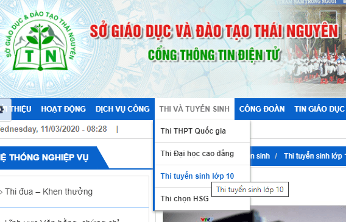

Sở GDĐT Thái Nguyên ra mắt chuyên mục "Học qua truyền hình cho học sinh lớp 5, lớp 9 và lớp 12" (cập nhật ngày 16/3/2020)
Để đáp ứng yêu cầu học và ôn tập kiến thức cho học sinh, đặc biệt là học sinh lớp 5, lớp 9 và lớp 12, http://thainguyen.edu.vn/ sẽ liên tục cập nhật các bài học, ôn tập các môn học đối với lớp 5, lớp 9 và lớp 12 trên các kênh truyền hình VTV 7, Đài phát thanh và Truyền hình Thái Nguyên, Đài phát thanh và Truyền hình Hà Nội trong thời gian học sinh tạm nghỉ học để phòng, chống dịch Covid-19. Sở GDĐT Thái Nguyên đề nghị các nhà trường, các thầy/cô giáo thông tin đến học sinh, giúp các em tiếp tục học và ôn tập, củng cố kiến thức.
Ban biên tập Cổng thông tin ngành giáo dục Thái Nguyên chúc các em học sinh nói chung, các em học sinh lớp 9 và lớp 12 nói riêng luôn chăm học, chăm rèn luyện thể lực, thực hiện tốt các biện pháp phòng, chống dịch Covid-19 và thành công trong kỳ thi tuyển sinh lớp 10, kỳ thi THPT quốc gia năm 2020.
LỊCH HỌC CÁC MÔN TRÊN TRUYỀN HÌNH THÁI NGUYÊN
Khối 5 | Lịch học | Môn học | Kênh TN 1 | Kênh TN2 |
Thứ 2 | Tiếng Việt | 09h10 | 08h20 | |
Thứ 3 | Toán | 09h10 | 08h20 | |
Thứ 4 | Tiếng Việt | 09h10 | 08h20 | |
Thứ 5 | Toán | 09h10 | 08h20 | |
Thứ 6 | Tiếng Việt | 09h10 | 08h20 | |
Khối 9 | Thứ 2 | Toán | 09h45 | 08h50 |
Tiếng Anh | 11h10 | 10h20 | ||
Thứ 3 | Ngữ văn | 09h45 | 08h50 | |
Toán | 11h10 | 10h20 | ||
Thứ 4 | Tiếng Anh | 09h45 | 08h50 | |
Ngữ văn | 11h10 | 10h20 | ||
Thứ 5 | Tiếng Anh | 09h45 | 08h50 | |
Toán | 11h10 | 10h20 | ||
Thứ 6 | Toán | 09h45 | 08h50 | |
Ngữ văn | 11h10 | 10h20 |
Các tiết học sẽ được phát lại vào 14h00 chiều cùng ngày trên cả 2 kênh TN1 và TN2
Để theo dõi Lịch phát sóng dạy học trên các đài truyền hình trên toàn quốc các thầy/cô, các bậc phụ huynh và các em học sinh xem tại đây >>
Để tiếp tục theo dõi lại các bài học và ôn tập, các thầy/cô giáo, các bậc phụ huynh và các em học sinh có thể đăng nhập vào các địa chỉ trên website của Sở Giáo dục và Đào tạo Thái Nguyên:
1. Ôn tập cho học sinh lớp 9 tai địa chỉ: http://thainguyen.edu.vn/tin-tuc-su-kien/thi-va-tuyen-sinh/thi-tuyen-sinh-lop-10

2. Ôn tập cho học sinh lớp 12 tại địa chỉ: http://thainguyen.edu.vn/tin-tuc-su-kien/thi-va-tuyen-sinh/thi-thpt-quoc-gia-2015
3. Ôn tập cho học sinh lớp 5 tại địa chỉ: http://thainguyen.edu.vn/tin-tuc-su-kien/thi-va-tuyen-sinh/on-tap-kien-thuc-lop-5
(http://thainguyen.edu.vn/ sẽ liên tục cập nhật cho chuyên mục này)